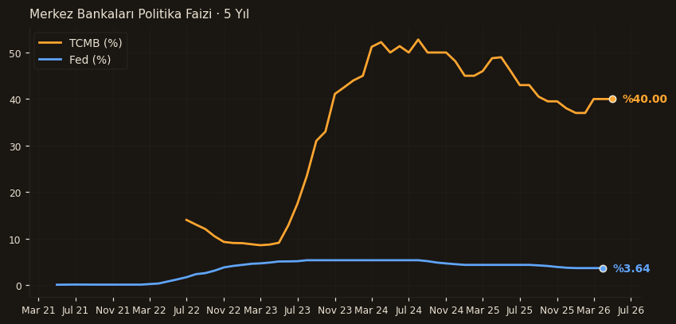

TCMB politika faizi 40, Fed Funds 3.64. Aradaki 36 puanlık nominal makas Türkiye'nin EM emsallerinin üst kuyruğunda ve carry trade arbitrajının ana motoru. Fed 2024 zirvesinden 525bp inerken TCMB 2024 ortasından bu yana sıkı patikayı koruyor — bu rejim farkı yabancı yatırımcı için zayıflayan dolar + pozitif reel faiz kombinasyonu yaratıyor.
Fed bizim baz senaryomuzda 2026 sonunda 3.0-3.25 bandına iner, ECB 2.0 etrafında dengelenir. Bu çerçevede TCMB için manevra alanı sürdürülebilir; ancak indirimlerin Fed kadar olması nominal makası daraltır.
View. Yıl sonuna kadar TCMB-Fed makasının 30-32 puana daralması, yine de carry için yeterli kalır. Risk. Fed'in hawkish yön değiştirmesi (örn. ABD'de yeniden ısınma) TCMB'yi sıkı kalmaya zorlar; bu büyüme üzerinde ek baskı yaratır.